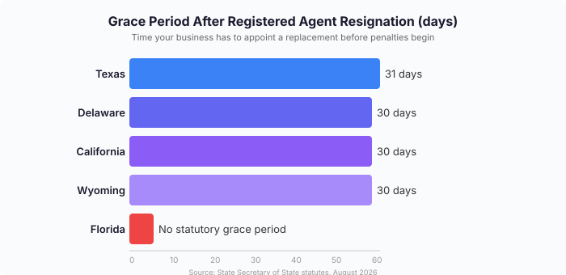

Your Registered Agent Resigned: What to Do Before You Lose Good Standing
The short version
TL;DR: When your registered agent resigns, you have a limited window -- usually 30 to 60 days, depending on your state -- to appoint a replacement before your LLC or corporation loses good standing, risks administrative dissolution, or faces default judgments in lawsuits. The fix is straightforward: appoint a new registered agent and file the required form with your Secretary of State. If you need a reliable registered agent fast, doola offers registered agent service bundled with LLC formation at $297 (or free when you form your LLC through them), and Northwest Registered Agent runs $125 per year with a flat renewal.Last updated: 2026-08-18. State-specific timelines and fees verified against official Secretary of State sources.

What happens when your registered agent resigns?
A registered agent is the legal point of contact between your business and the state. They receive service of process (lawsuit notices), government correspondence, tax notices, and compliance reminders. When that agent resigns, a filing goes to the Secretary of State naming a replacement or leaving the spot empty. Either way, your business is on the clock.
The resigning agent files a Statement of Resignation with the state. Most states then impose a grace period -- typically 30 days -- during which the outgoing agent still holds the position and can receive legal documents. After that window closes, your business has no registered agent on file.
How long do I have to replace my registered agent?
The timeline depends entirely on your state of incorporation. Here is what the five most common LLC states require:
| State | Grace period | Filing fee | Key detail |
|---|---|---|---|
| Texas | 31 days | $15 | Agent must give written notice to business first; files resignation before 11th day after notice |
| Delaware | 30 days (no successor) | $50 or $0 if successor named | Two-track: agent can appoint successor (no gap) or resign with 30-day notice + 30-day wait |
| California | 30 days | $20 | Resignation filed on Form RA-100; business must appoint new agent within 30 days |
| Florida | No statutory grace | $25 | No explicit waiting period; file promptly to avoid status issues |
| Wyoming | 30 days | $50 | Agent files resignation with Secretary of State; 30 days to appoint replacement |
The 30-day window is the most common, but it is not universal. Some states provide 60 days; others offer no explicit deadline, meaning the risk of penalties starts immediately.
What happens if I do not replace my registered agent in time?
Loss of good standing. Your LLC or corporation falls out of good standing with the state. This affects your ability to open bank accounts, obtain business loans, sign contracts, or renew professional licenses. If you are seeking investors or applying for a line of credit, good standing is one of the first things lenders check.
Administrative dissolution. States can administratively dissolve your business entity for failing to maintain a registered agent. Texas explicitly warns of this. Delaware can void a corporation's charter. Reinstatement is possible but requires paperwork, reinstatement fees ($100 to $500+), and potentially back-dated annual reports.
Default judgments. This is the real danger. If your business is sued and the process server cannot find a registered agent to deliver the lawsuit papers, the court may proceed without you. A default judgment can lead to garnished bank accounts, seized assets, or liens on your business -- even if the underlying lawsuit was defensible.
Missed compliance deadlines and fines. Undelivered notices cause missed annual reports, tax filings, or regulatory responses, triggering additional penalties. Many states impose fines for failing to maintain a registered agent.
How do I replace my registered agent?
Step 1: Choose a new agent. You can appoint yourself, a trusted contact (if they have a physical address in your state and are available during business hours), or a professional registered agent service. For most founders, a professional service makes sense -- it keeps your personal address off public records and ensures coverage during business hours. doola bundles registered agent service with LLC formation at $297, or free if you form through them. Northwest Registered Agent charges a flat $125 per year with no hidden fees.
Step 2: Get consent. Your new registered agent must agree to serve. If you hire a professional service, they handle this automatically.
Step 3: File with your Secretary of State. Each state has its own form. Some allow online filing (Wyoming, Delaware, Texas all support electronic filing); others require paper. Filing fees range from $0 to $50. Once processed, your new agent is officially on record.
Do not wait for the resignation to take effect. The smartest move is to appoint a replacement before your current agent's resignation is even filed. Many states allow concurrent filings -- you file your new agent appointment at the same time or before the resignation hits the state's system.
Can I be my own registered agent after the resignation?
Yes, most states allow you to serve as your own registered agent. Requirements: a physical street address in the state (not a PO Box), and availability during normal business hours (typically 9 AM to 5 PM, Monday through Friday).
The trade-off is that your home address becomes public record. Anyone who looks up your business can see where you live. A registered agent service keeps that off the public record. For privacy-conscious founders, especially those operating from home, a professional service is worth the annual fee.
What if my registered agent resigned without telling me?
This happens more often than it should. A registered agent files their resignation with the state but never notifies the business. You find out when you try to renew your annual report, apply for a loan, or -- worst case -- when a process server shows up and no one is there to receive the documents.
Protect yourself: monitor your Secretary of State's business entity search page regularly. Most states let you look up your LLC's status and see the current registered agent on file. Check it once a quarter. If the agent field shows a name you do not recognize or says "none," act immediately.
What should I do right now if my registered agent just resigned?
- Verify the resignation. Check your Secretary of State's online business entity search. Confirm whether the resignation has been filed and what date it becomes effective.
- Count your days. From the resignation filing date, calculate how many days remain in your state's grace period.
- Pick a new agent. A professional service is fastest -- you can have one in place within 24 to 48 hours. doola and Northwest are solid picks for different reasons.
- File immediately. Submit your state's registered agent change form online if possible. Pay the filing fee.
- Confirm the filing. After a few business days, check the Secretary of State's site again to verify your new agent appears on record.
Recap
- Check your Secretary of State website to confirm the resignation and its effective date.
- Count the remaining days in your state's grace period (30 days in most states; no explicit deadline in Florida).
- Choose a new registered agent -- professional service or yourself.
- File the change with your Secretary of State before the grace period expires.
- Verify the filing went through by searching your business entity online.
- Set a quarterly reminder to check your registered agent status going forward.
FAQ
How much does it cost to replace a registered agent?
The filing fee to update your registered agent ranges from $0 to $50 depending on your state. Texas charges $15, Delaware charges $50, California charges $20, Florida charges $25, and Wyoming charges $50. If you hire a professional service, annual fees typically range from $99 to $297 per year on top of the filing fee.
Can my registered agent resign without giving me notice?
Yes. In most states, the resigning agent is required to notify the state, not necessarily the business. Some states (like Texas) require the agent to send written notice to the business before filing, but enforcement is inconsistent. Monitor your Secretary of State's business entity search page regularly.
What is the difference between a registered agent and a statutory agent?
Nothing. They are the same role under different names. Most states use "registered agent," but a few use "statutory agent" (Arizona, Ohio) or "resident agent." The legal function is identical.
Can I switch from a professional registered agent to being my own?
Yes. File a registered agent change form with your Secretary of State naming yourself as the new agent. You will need a physical street address in the state and must be available during business hours. The change takes effect once the state processes your filing, usually within a few business days.
What happens to lawsuits filed during the gap period?
If your business is sued during the period when you have no registered agent, the process server may be unable to deliver the lawsuit. If service of process fails, the court could enter a default judgment against your business. This is the most damaging consequence of failing to replace an agent promptly.
Do I need to notify the IRS when I change my registered agent?
No. The IRS does not require notification of registered agent changes. Your EIN and tax filings are not affected. However, make sure your state-level tax agency has your correct address for correspondence, which is separate from the registered agent designation.
Get our free LLC Formation Checklist
Step-by-step guide: state fees, timelines, EIN process, and the exact paperwork checklist. Used by 200+ founders.
Download Free Checklist